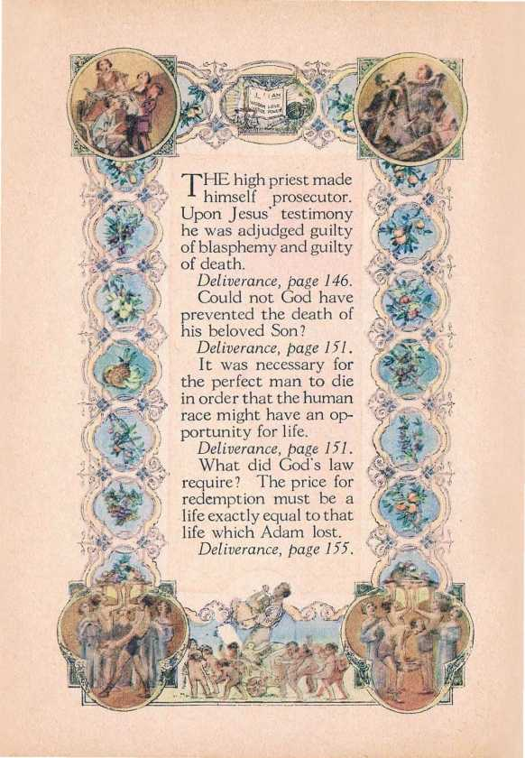

JESUS began his ministry by preaching, "The kingdom of heaven is at hand." Seeing that nearly 1900 years have passed since he uttered those words, what could Jesus have meant? Deliverance, page 133.
Satan the enemy was ever on the alert to find some means whereby he might put Jesus to death. Deliverance, page 135.
Early in the ministry of Jesus the Pharisees and other members of the clergy began to take issue with him.
Deliverance, page 135.
AI THEN the Pharisees saw the the disciples of Jesus plucking corn on the sabbath day, the pious souls vigorously protested that the acts of the disciples were in violation of the law.
Deliverance, page 136.
The time came when Jesus must offer himself formally to the Jews as king.
The great outburst of spontaneous applause from the common people made the blood of the Pharisees boil. The Pharisees said, “The world is gone after Him."—John 12:19.
Deliverance, page 144.
A few days later was the passover. Judas was bent on carrying out the wicked purpose of the Devil. Deliverance, page 145.
require? The price for redemption must be a life exactly equal to that life which Adam lost.
Deliverance, page 155.
1 himself prosecutor. Upon Jesus’ testimony he was adjudged guilty of blasphemy and guilty of death.
Deliverance, page 146.
Could not God have prevented the death of his beloved Son?
Deliverance, page 151.
It was necessary for the perfect man to die in order that the human race might have an opportunity for life.
Deliverance, page 151. What did God's law

Deliverance, page 164.
man.
Next Reading Assignment/ ' Pages 128 to 152 1
Following Week
Pages 153 to 178
God raised him out of death a divine being and exalted him to a position above all others in the universe, God alone excepted.
Deliverance, page 174.
Could not an angel or a divine being be used to satisfy the judgment against Adam? Deliverance, page 155.
The apostle again proves that Jesus was made a perfect man and not a spirit being in order that he might redeem the human race.
Deliverance, page 163.
The man Jesus was dead and must remain forever dead as a